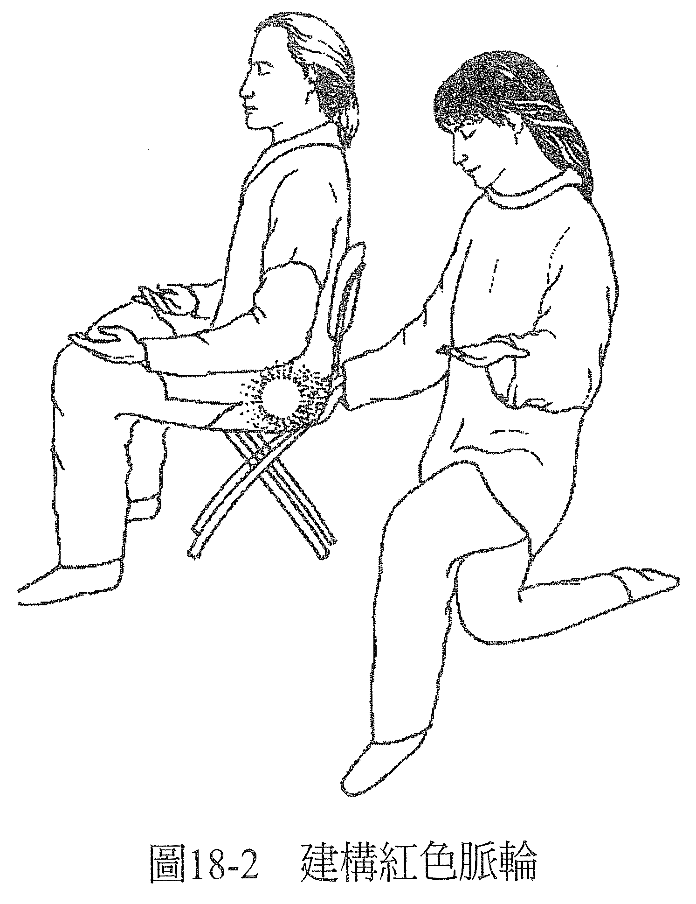
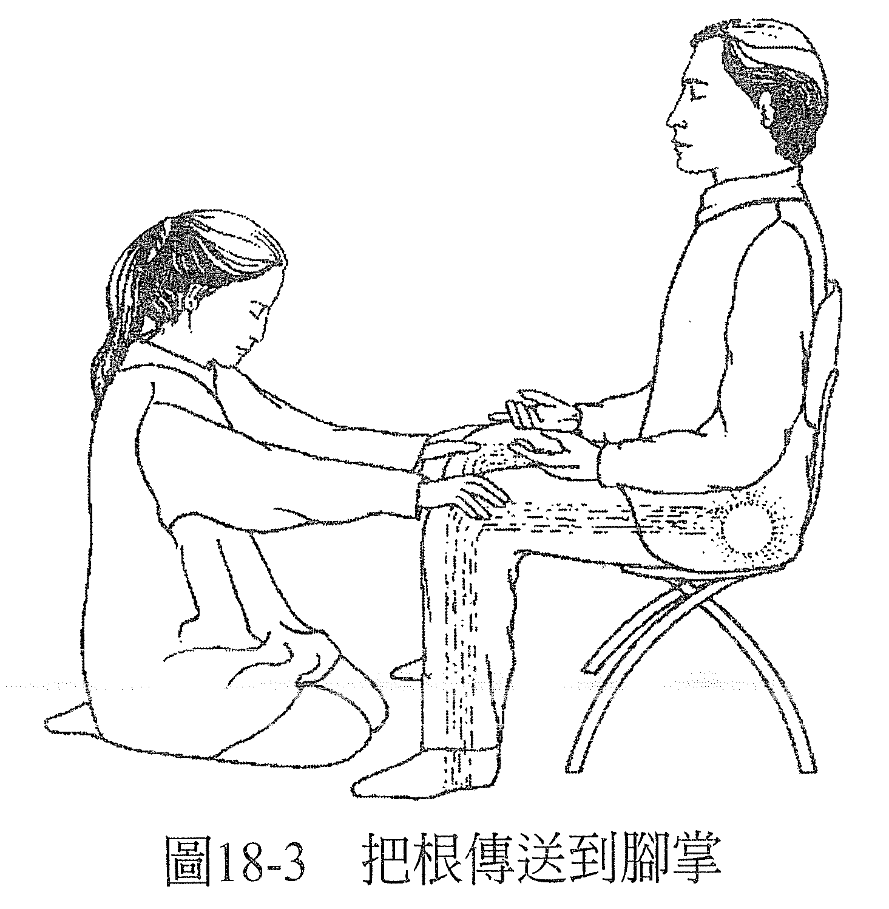
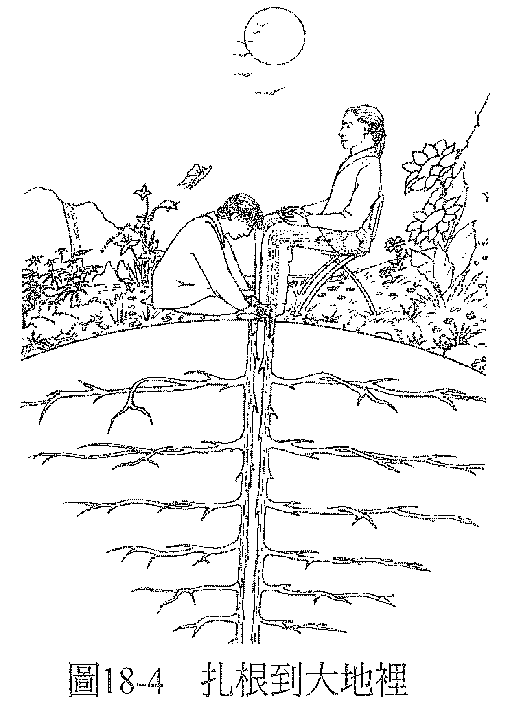
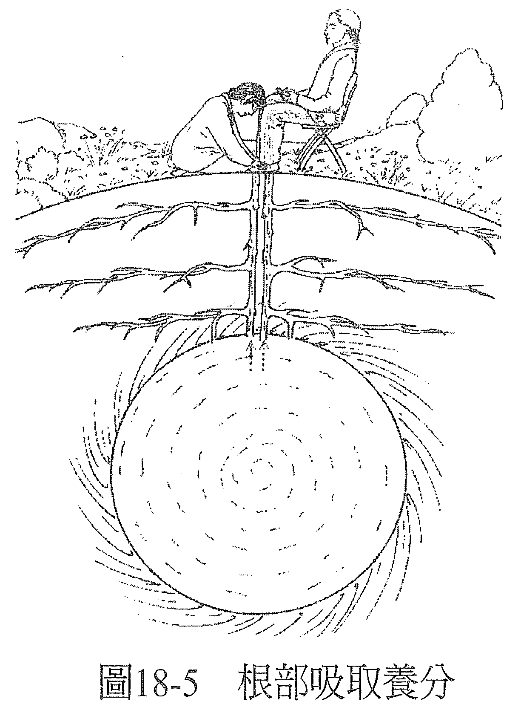
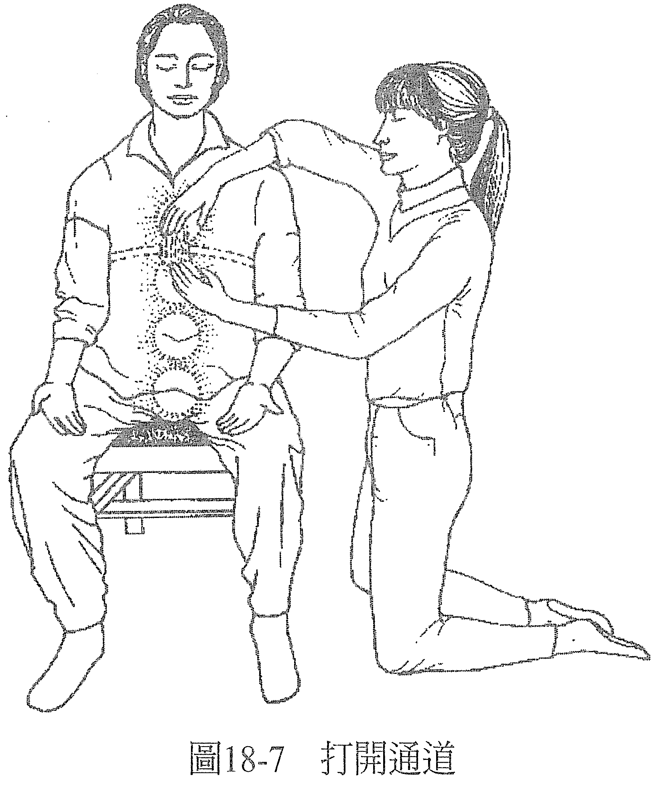
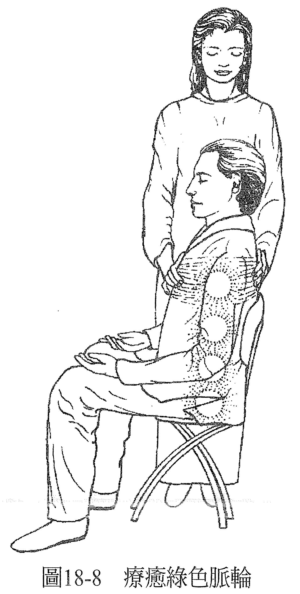
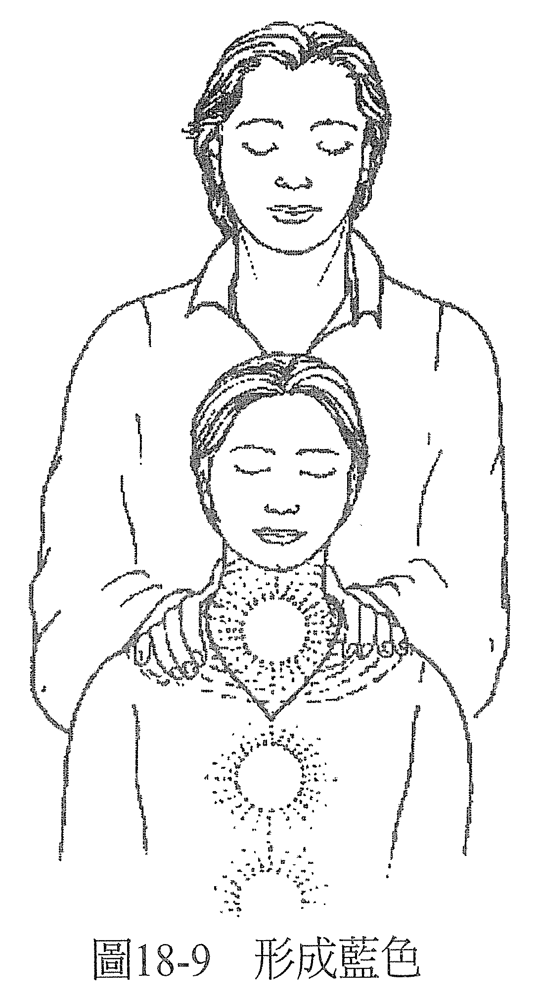

第 18 章 用脉轮和（或）思想形式来疗愈
在典型疗愈里，能量治疗师可以用脉轮的颜色来创造出一个「健康」的模型。若你看见脉轮的颜色和它原本该有的不一样，你可以移除这个不同的颜色，用它自然该有的颜色取代。当每种颜色各归其所（红色脉轮是红的，橙色脉轮是橙的，以此类推），你就创造出案主现在觉得健全的感知了（如果你还尚未读过附录 1 到 4 介绍的脉轮详细资讯，现在不妨翻阅一下）。
用脉轮的颜色当成健康模型时，要不要结合思想形式（thought forms）都无妨。不使用思想形式来做也是可以的，因为脉轮已经呈现出发生在案主意识里的一切，所以其他的都非属必要。
喜欢用思想形式与脉轮一起做疗愈的能量治疗师，他是认为如此一来可以更详细知道案主的意识发生什么事，便能更好地回应对方所描述的症状。
结合思想形式与脉轮时，仍然要从每个脉轮是否有它该有的颜色来判断它是否健康；只要有思想形式出现，都要移除——不管你认为它是好是坏，因为如果把它留在那里，最终的样貌都会和我们用的健康模型有所不同。
有时思想形式会自己出现，它想要我们在疗愈之后告诉案主一些事，作为疗愈的一部分（例如：「刚才你的靛蓝脉轮里有天使陪着你」，或：「一个你深爱的人刚才在绿色脉轮这里陪你」）。当你用的是以上叙述式的典型脉轮疗愈，如果思想形式是自己出现，每出现一个、你就处理一个，然后再前进到下一个脉轮。
若无法执行典型的疗愈形式，例如遇到情况危急或是需要用能量疗愈做急救处理，那你在绝大多数的情况下，都可以用白光来进行，如前一章所述；当然也可以用思想形式，因为这样做可以让症状迅速、舒服地缓解。需要马上舒缓疼痛或头痛的时候，思想形式特别有效，例如用压力阀；做脉轮的话，则是可以让你详细得知案主的意识里特定部分的压力情况，不过所需要的时间会略长些。
虽然处理急救通常会用思想形式来做，但偶尔也会从脉轮着手。比方说，如果案主离开了身体（像是癫痫发作或昏倒的情况），那你可以建构红色脉轮，把根传送到大地里，汲取养分往上带到红色脉轮，如此可以迅速地把他带回身体。因为红色脉轮与案主及身体的关系有关，所以这通常可以让他迅速返回。
在做典型脉轮疗愈时，开始的方法和做典型白光疗愈一样，确定案主坐着、双脚平放在地，双手张开、放松地置于大腿上、掌心朝上，眼睛闭着，心中怀抱敞开和接受的态度。
从疗愈的起始姿势做起，让双手去感觉到能量，觉得疗愈可以发生了。接着告诉自己，你感觉到的能量是白光，正从你的双手散发出去。
把手温柔地放在案主的肩膀上，轻触即可，想象你正迅速地让案主充满白光。做白光疗愈的时候，你的计划是当你看到案主全身都盈满白光，你就看到疗愈完成了，这大约会花五到十五分钟的时间，视你看到什么、做了什么而定。到这个时候，意义就不一样了，你是决定用从脉轮做疗愈时得到的细节，做更进一步的疗愈。
没有哪一种形式的能量疗愈比较有效，每种都可以用来疗愈所有的症状。这里，让案主充满白光，会让你觉得你正走入案主意识最深层的部分；你在疗愈的过程中看到的，会是从这个最深层的部分所看到的。充满白光或许只需要一、两分钟，你也许会有一些画面，让你知道你已经来到这个最深层——案主的意识中心。也许案主的中心有一根管子，或是那里有案主的影像。当案主正充满著白光，或许就有一些东西正在得到疗愈，例如盔甲卸下了，或是壳打开了（见图 18-1）。

等案主充满白光，就依次触碰他身上各脉轮所在的部位，进行的时候不用说话，只要看进那里有些什么，并做该做的事来创造出疗愈已经发生的感知。要再次强调，不管你是否有碰触案主，他都可以获得疗愈，只不过这里拿出来说明的是透过身体接触来做疗愈，它会增强交流，让案主安心。
很多人会觉得红色脉轮很敏感、不想被碰触（它位于会阴，肛门和性器官之间），是以大多数的能量治疗师是从脊椎底端来做，比较方便。假如红色脉轮有严重的问题，可以考虑接触案主需要疗愈的地方，不然也可以从脊椎底端来做，或是把手放在椅子下需要治愈的区域正下方来做。手放上去以后，想象有一股能量流从你的双手或手指涌出，在你知道是红色脉轮之处创造出一个澄净的红色能量球。若你在那里看到其他的颜色，就记住是什么颜色，接着移除它，用正红色取代它，并移除所有的思想形式（见图 18-2）。

当红色脉轮处于澄净的状态了，就请红色脉轮沿着案主的双腿往下把根传送到脚掌（见图 18-3），看看会怎么样，如果有需要的话可以帮助它往下。然后你可以换姿势，把双手放在案主的双膝上，接着再放至脚掌上，并想象案主脚掌下的画面，若有需要就加以改变它。

记住，案主脚掌下的画面要是可以让根部很开心的场景。如果不是，就把画面改变直到能够让根部开心为止。然后，请求根部蔓延开来，往下愈来愈深入滋养的源头（见图 18-4）。

当根部触及地心的能量球，应该会马上有反应。养分应会立即开始沿着根部往上，进入案主的双脚还有红色脉轮。如果没有，你要帮忙它，用各种方法让养分能够往上（见图 18-5）。

一种有用的做法是和案主保持内心的对话，问他问题，想象他回答，用这样的方法和根部说话。当能量往上流进根部，你可以再把手放在红色脉轮处，检查这里的情况，确认案主是否已经接收了这股能量。
接下来的几个脉轮，你可以从案主的左边或右边来做，一只手接触他的正面，一只手接触其背面。若中间隔着椅背也无妨，因为意识可以穿透一切。
在橙色脉轮的地方，想象有一股能量分别从两只手涌出，在你知道的橙色脉轮处，创造出它该有的颜色。若出现任何思想形式，就加以处理（见图 18-6）。

等橙色脉轮变成它该有的状态以后，用同样的步骤去做黄色脉轮。
在进行绿色脉轮之前，当你一只手还放在黄色脉轮上，就先把另一只手移到绿色脉轮上，以确保两个脉轮之间有一条畅通的管道能够穿越阻膜（第 8 章提过）。
想象每个脉轮都好比在一个房间里，然后请黄色脉轮房间的屋顶打开，请绿色脉轮的地板也打开。最好的情况是两个都打开了，类似相机的两个虹膜式光圈一般，而两个脉轮可以看到彼此，中间是清空的。假如案主还有心防，就可能会打不开，那你就必须用钥匙来开（见图 18-7）。

当有任何画面无法呈现出两个脉轮之间有开关的空间，那就一定要改变这个画面，直到能量能在两个脉轮之间顺畅流动为止。如果这里遭薄膜阻碍，那案主的意识要在黄色脉轮和绿色脉轮（和力量、控制、自由有关的认知，以及和爱、连结有关的认知）之间移动的时候，就会感觉到以愤怒、哀伤等形式存在的阻抗，或是其他被理解为阻抗、感觉不好的情绪。只要这个屏障尚未移除以前，案主每次要让注意力游走于这两处脉轮的时候，都会感觉到这层阻抗的薄膜。
任两个脉轮之间有屏障，都代表案主的意识在这两种观点之间有障碍。在此可能表示在自由与连结，或控制与接纳之间，心中有所冲突。疏通通道，会让案主的注意力在这两个脉轮间游走变得容易，解除存在于意识中的冲突。然后，案主就可以看到这两种认知其实是可以相容的。
两个脉轮之间有了通道之后，就用和做橙色、黄色脉轮同样的方式疗愈绿色脉轮：一手触摸前方，一手触摸后方，让能量流动于双手之间，在交会处形成一个能量球，发出它该有的颜色。有的能量治疗师喜欢想象自己的绿色脉轮里有一种翠绿的颜色，沿着双手往下传送到案主的绿色脉轮，并看看传送的时候会发生什么事。它会让能量治疗师与案主之间有着良好的连结感（见图 18-8）。

当做到蓝色脉轮的时候，你的手必须放在案主的双肩上，不要放在前、后方，这样他才不会有被勒住的感觉。一手放一边的肩膀上，想象各有一股能量从双手涌出，在你所知的蓝色脉轮处形成一种天空蓝的颜色。遇有任何锁链、重物或其他思想形式出现，都该加以移除（见图 18-9）。

等蓝色脉轮变成它该有的样子以后，你就站到案主旁边，一只手放在案主的蓝色脉轮后面，另一只手触摸他和你同边的那只手的掌心，并请蓝色脉轮沿着他的双臂往下伸出枝干。然后，你应该会看到蓝色的能量流延伸到他手掌前方，来到一定的距离，大多数的能量治疗师会觉得八到十公尺的距离最佳（见图 18-10）。

另一边也重复上述的过程去做，接着，这两股能量流会汇集于一点上。如果没有的话，就一定要「导引」它们直到汇集为止。有时候，这两股能量汇集的地方会出现一些景象，假如出现了，这个画面代表的是案主意识里的目标。如果在这里有看到任何东西，让案主知道，他可能会觉得很重要，而且这也是疗愈过程中的一部分。
当做到靛蓝脉轮的时候，你的手又可以放在案主的头的前方与后方了（见图 18-11）。在他额头的位置，用在做橙色、黄色、绿色脉轮同样的方式进行疗愈。

有些能量治疗师喜欢把靛蓝脉轮想象成一扇窗户。他们看入窗内、看看房间里的景致，房里的一切应该要是靛蓝、午夜蓝的。若你这么做了，你应该会看到案主坐在房间的中央，从窗户往外看。
你在房里看到的事物，有时候显示了案主与他房子、载具、身体之间的关系，以及他与灵性的关系。你要从这个角度去理解你在这里看见的景物。记住，靛蓝脉轮代表了案主对于自己身为驻于身体里的心灵，虽然穿戴着一个生物结构，但同时又是内在的心灵所怀抱的观感。
往外看的景色应该像是透过敞开的窗户，看到清澈的夜空。除此之外其他的景象都要加以改变，直到回复它该有的样子。透过窗户向内看到的景观，显示的是就案主与载具的关系而言，他的自我观感为何；往外所看到的景物则显示了案主是否有能力把他的灵性观点引导到外在，应用在周遭发生的事情上。
当做到紫色脉轮的时候，一只手放在案主的头顶，接触它，然后一股紫色的能量球就形成了。接下来，请紫色脉轮打开。理想的情况是它很容易就打开了，看起来像一朵莲花盛然绽放。如果没有的话，就需要移除类似遮罩或屏障的东西，重新请求它打开（见图 18-12）。

最后，在脉轮以它该有的样子展开之后，就请求白光从上方透过紫色脉轮充满案主，从脚到头，让每个脉轮（由红色到紫色）依序焕发出比以前更明亮、澄净的光芒。
等案主充满白光、全身白光满溢，每个脉轮都以该有的颜色焕发明亮、干净的光芒，也没有思想形式出现，这时候，你就创造出已经痊愈的感知了（见图 18-13）。

接着，告诉案主，等他觉得差不多了，就可以张开眼睛，问问他有没有觉得哪里不同了。要鼓励案主去留意在他所感知到的意识和身体里，有哪些不一样的地方，尽量鼓励他把截至目前为止任何的正面感知在第一时间说出来。
如果有症状还没有完全纾解，依然存在，那你可以选择马上处理这个症状，或是等案主也听完你给他的反馈后，再做处理。
你可以拥抱案主，欢迎他、他的新意识来到世界上。如此一来，案主将有机会与你心贴着心、表达他的感谢，或就只是感受这个接触；而你也有机会感激案主让你有机会成为让爱与能量流过的载具，为他进行疗愈。
给完回应，症状也纾解之后，再来一次拥抱，让身为能量治疗师的你和案主双方意识里的疗愈划下句点。案主好了以后，就没有回家作业了，没什么特别要做的了，也不需要进一步的治疗。他们可以好好过日子。你也可以放下任何想要保护案主或挂念的心，坚持你知道案主已经痊愈的这个认知，他不再需要你这边做出任何进一步的协助。
这么做，你和案主两人都会觉得自由。
————在这个世界上，一切都可以疗愈！————